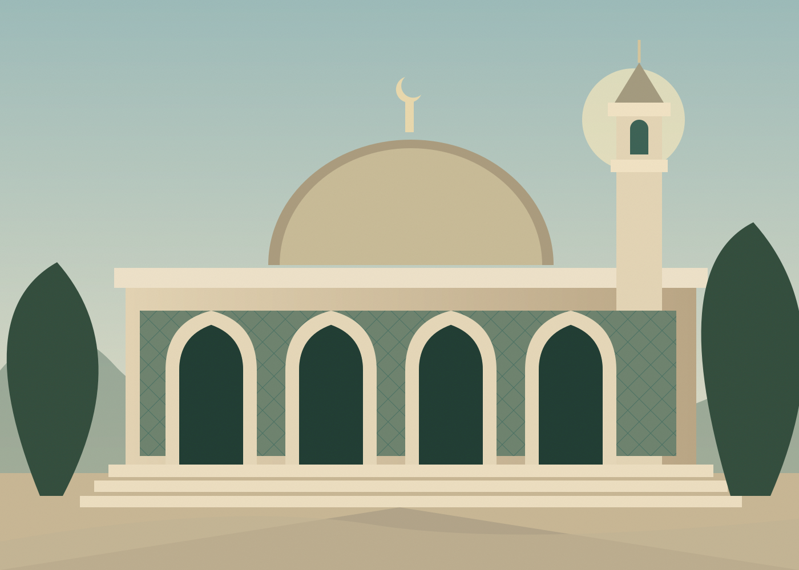

Worship & reflection
Make space for what matters. Come together for daily prayers, quiet reflection, and the connection of Jumu’ah.
Explore prayer timesA welcoming space to pray, learn, and belong. Discover a community rooted in faith and open to the heart of Lisbon.

Make space for what matters. Come together for daily prayers, quiet reflection, and the connection of Jumu’ah.
Explore prayer timesA lifelong journey of discovery. Make room for Qur’an study, meaningful conversations, and learning across generations.
Learn with usSmall acts. Lasting impact. Share your time, meet your neighbours, and help build a kinder, more connected community.
Get involvedوَجَعَلْنَاكُمْ شُعُوبًا وَقَبَائِلَ لِتَعَارَفُوا
“And made you peoples and tribesQUR’AN 49:13 · EXCERPT
that you may know one another.”